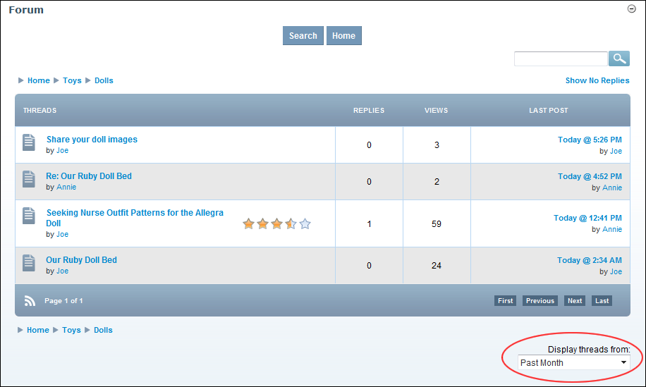

Filtering Threads from a Single Forum
How to filter the threads which are displayed for a single forum.
- Navigate to the required Forum. See "Navigating to Forums & Forum Groups"
- At Display Thread From (located in the bottom right corner of the module), select a timeframe to filter thread by from these options: Today, Past Three Days, Past Week, Past Two Weeks, Past Month, Past Three Months, Past Year, All Days. This displays all matching threads.

Filtering Threads from a Single Forum